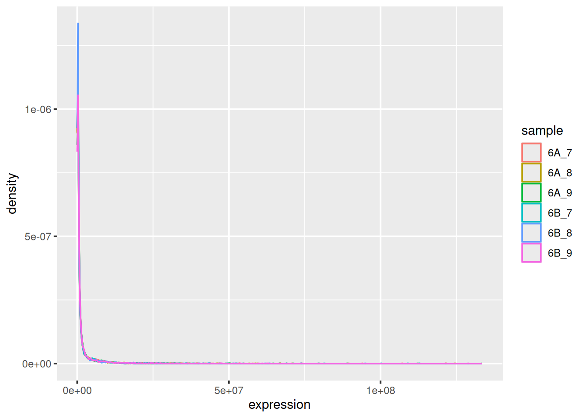
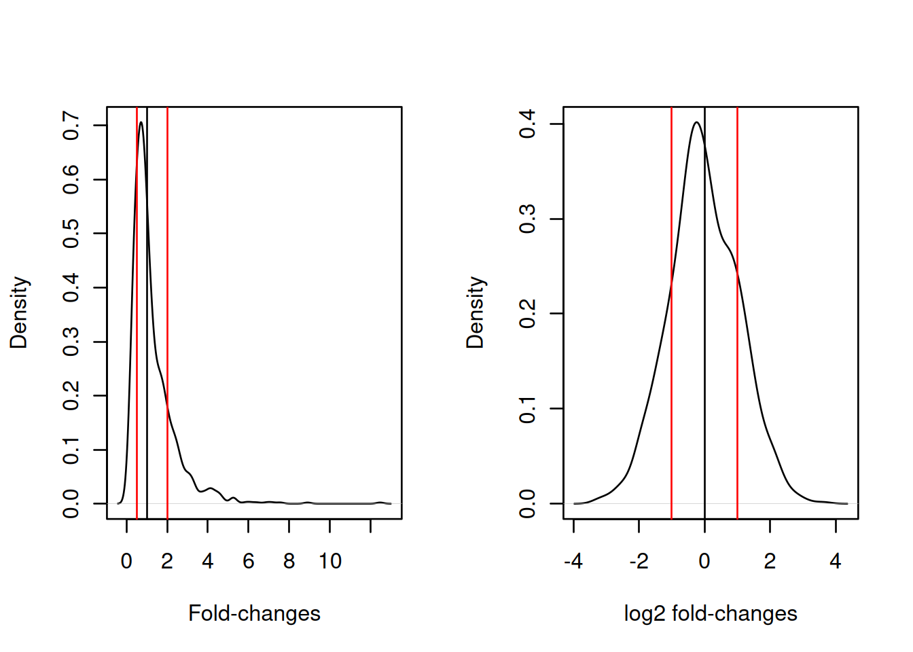
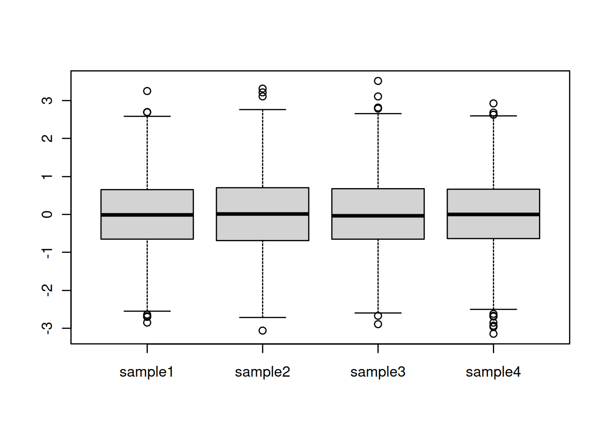

Chapter 5 Data normalisation: centring, scaling, quantile normalisation
Learning objectives
- What is data normalisation and why do we need it?
- What are centring and scaling?
- What is quantile normalisation?
- How to assess if normalisation worked.
- Lean about handling of missing values.
5.1 Introduction
In a typical high throughput experiment, we assay thousands of features (gene transcripts, proteins, metabolites, ...) in a certain number of biologically diverse samples (from about 6 to hundreds or thousands).
- But what do you think would happen is we took the same sample, such as a suspension of U2OS cells (a cell line stemming from bone cancer), split it in two, and measured it twice using the exact same protocol? Will the measurements be exactly identical? Why?
These two samples would be technical replicates and the observed differences would be solely the result of technical variability.
- If we now take two independent different cell cultures of the same cell line, do you expect there to be larger, similar or smaller difference than in the example above? Why?
One would refer to thes two samples as biological replicates, and the observed differences would be due to technical and biological variability.
- In biomedical research, experiments aim at measuring biological variability by comparing two or more biological conditions in a controlled setting. If we now take two independent cell cultures and treat one of them using a drug, and them measure the two samples, do you expect there to be larger, similar or smaller difference than in the examples above? Why?
The observed differences between the two samples would comprise technical variability, biological variability and additional biological variability due to the treatment. The be able to measure any biologically signal in the data, the biological variability, and the one produced by the treatment of interest in particular, must be larger than the technical variability.
However, to before analysing any data, it is often (always) necessary to make the samples as comparable as possible by removing the technical variability (that should be shared among all samples) without removing biological variability (that will differantiate the samples biologically).
5.2 Data transformation
The very first step in preparing a dataset is to visualise the distribution of the values. Below we see the density plots for 6 proteomics samples and about 4000 peptides from the CPTAC study that compares the reproducibility of quantiative mass spectrometry using human proteins spiked into a yeast proteome background.
## Warning: multiple methods tables found for 'calculateFragments'Figure 5.1: Raw quantiation values from the proteomics CPTAC data.
We see that the vast majority of the data are at very low values with some very high values:
## 6A_7 6A_8 6A_9
## Min. : 15014 Min. : 14940 Min. : 19946
## 1st Qu.: 154475 1st Qu.: 155875 1st Qu.: 169510
## Median : 345620 Median : 322680 Median : 362710
## Mean : 1750921 Mean : 1542153 Mean : 1675242
## 3rd Qu.: 1020500 3rd Qu.: 930635 3rd Qu.: 1044450
## Max. :107120000 Max. :124530000 Max. :133480000
## 6B_7 6B_8 6B_9
## Min. : 12167 Min. : 14447 Min. : 18980
## 1st Qu.: 145530 1st Qu.: 144330 1st Qu.: 172565
## Median : 325910 Median : 309180 Median : 366900
## Mean : 1677453 Mean : 1454185 Mean : 1743025
## 3rd Qu.: 948920 3rd Qu.: 881775 3rd Qu.: 1060350
## Max. :112820000 Max. :94944000 Max. :128870000Such data are difficult to visualise and to analyse, because their distribution of their skewness. The first step is thus generally (but not always8 When analysing count data, such as in the case of RNASeq of spectral counting in proteomics, it is better not to transform the data and use dedicated distribution for count-based data. In the cases above, the negative binomial distribution has been show to accurately model technical and biological variability of such experimental data.) to log-transform the data, as shown below.
Figure 5.2: CPTAC data after log transformation
► Question
Load the CPTAC data from the rWSBIM1322 package (version 0.1.3 or later) and reproduce the figures above. See ?cptac for details .
► Solution
This is particularly important for fold-changes, as illustrated below. Typical threshold are 0.5 and 2 for down- and up-regulation, with lack of changes around 1. In log space these become -1 and 1, and symmetrically centred around 0.
Figure 5.3: Non-symetric fold-changes (left) and symetric log fold-changes (right) distributions..
5.3 Normalisation
In addition to possible transformation of the data, it is necessary to further process the data to remove as much as technical variability as possible while keeping biological variability. This step is called normalisation. One of the important requriements of most normalisation techniques is that most proteins aren't expected to change among biological conditions. In other words, normalisation expects only a minority of biological features to be differentially expressed in the conditions of interest.
5.3.1 Centring and scaling
► Question
We are going to start by generating a data set to precisely illustrate the effect of the methods.
Use the
rnorm()function to generate a distribution of 1000 values centred around 0 and with a standard deviation of 2. Visualise these data.Generate four such distribution with parameters N(6, 2), N(4,2), N(4, 1), N(7, 3) and create a matrix or dataframe with rownames
gene1togene1000and colnamessample1tosample4. Visualise these data and discuss whether these samples could be compared against each other. Do assure replication of this simulation, set the random number generation seed to 123.
► Solution

Centring refers to the operation of modifying the mean value of a set of values by subtracting a fixed value from each individual value. On the figure above, this equates to shifting the values up to down. A typical value is the mean of all the data to be centred.
► Question
For each column, calculate its mean value and subtract it from the values. Visualise and interpret the centred data.
► Solution
Scaling refers to the operation of rescaling a set of values to scale in the range of 0 and 1 (or -1 and 1). On the figure above, this equates to changing the boxes so as to all have similar heights. A typical scaling method is to dividing the values by their standard devitations.
► Question
Calculate the standard deviation of each column and divide the values by it. Visualise and interpret the centred data.
► Solution

► Question
The above oberations can also be performed with R's scale function. Familiarise yourself with it by reading the documentation, then regenerate the data above and repeat the scaling/centring operations using scale.
5.3.2 Quantile normalisation
Quantile normalisation is a method that will make different data distributions identical. The method works shown below using a small dataset with quantitation data for three samples (S1, S2, and S3) and 4 genes (A to D) (example taken from the Wikipedia page).
x <- cbind(S1 = c(5, 2, 3, 4),
S2 = c(4, 1, 4, 2),
S3 = c(3, 4, 6, 8))
rownames(x) <- LETTERS[1:4]
x## S1 S2 S3
## A 5 4 3
## B 2 1 4
## C 3 4 6
## D 4 2 8The first step is to rank (from lowest to largest) each value in each sample (column). For sample S1, gene B has the lowest value, hence rank 1, then gene C gets rank 2, gene D gets rank 3, then gene A, with the highest value, gets rank 4. We store these in a new matrix rnk.
(rnk <- apply(x, 2, rank, ties.method = "min"))## S1 S2 S3
## A 4 3 1
## B 1 1 2
## C 2 3 3
## D 3 2 4We now arrange the values according to their rang (i.e. sorting) and calculate row-wise means: the mean of all lowest values, ... up to the mean of all highest values.
sorted_x <- apply(x, 2, sort)
ranked_means <- rowMeans(sorted_x)
cbind(sorted_x, ranked_means)## S1 S2 S3 ranked_means
## [1,] 2 1 3 2.000000
## [2,] 3 2 4 3.000000
## [3,] 4 4 6 4.666667
## [4,] 5 4 8 5.666667The final step is to replace the ranks in rnk by the respective respective ranked_means: the gene with the lowest expression in each samples gets the lowest ranked mean, ..., the gene with the highest expression in each sample get the highest ranked mean.
x_norm <- matrix(ranked_means[rnk], ncol = 3)
dimnames(x_norm) <- dimnames(x)
round(x_norm, 2)## S1 S2 S3
## A 5.67 4.67 2.00
## B 2.00 2.00 3.00
## C 3.00 4.67 4.67
## D 4.67 3.00 5.67► Question
Using the cptac data (MSnSet object), normalise it using quantile normalisation and visualise the data before and after. To normalise the data, you can use the normalise function, defining method = "quantiles".
► Solution
Whenever new data is presented, one of the first steps is to assess the need for normalisation by verifying the data distributions. Large variations thereof should indicate that extra care should be taken and point to possible more serious issues in the data acquisition. Visualisation of these distributions after normalisation will necessarily comply with the normalisation strategy employed (scaling, centering, quantile normalisation).
In the later chapters, we will see dimensionality reduction and clustering methods, that can be used to assess the grouping of the samples in an experiment. These methods are useful to check the effect of the normalisation procedure, and for example verify it the samples tend to cluster more according to the biological groups defined by the experiment.
5.4 Missing data
In some omics experiments, a substantial faction of the data can be missing. Missing values are encoded as NA in R, and should be represented as such in omics data.
Missing data can be very tricky to handle, as they can arise for different reasons. The first one is related to the absence of the feature, or an abundance that is below the detection limit of the device. These data would typically be missing for biological reasons and thus aren't appearing at random. Such missing values are often denoted missing not at random (MNAR).
However, missing values can also appear randomly, due to uneven or absent cDNA amplification in transcriptomics from low amounts of RNA (for instance in in single cell RNA sequencing) or due the semi-stochastic nature of mass spectrometry in proteomics. Such missing values are denoted missing (completely) at random (M(C)AR).
There are two approaches to deal with missing values:
Filtering: remove features that have missing values, or a certain proportion of missing values.
Imputation: replacing missing values by sensible values. Some imputation methods can only be applied to data missing at random, while others can only be applied to data missing not at random.
► Question
Load the naset object available in the MSnbase package. You can either use the data as an MSnSet (as it currently is), or convert it to an SummarizedExperiment with as(naset, "SummarizedExperiment").
Calculate the number of missing values along the rows and sample, then visualise these data and represent them as tables showing the number of occurences of 1, 2, 3, ... missing values.
► Solution
All the concepts and methods seen in this chapter will be paramount in the next ones, once we will test, cluster or classify our data.
5.5 Additional exercises
► Question
You are provided with a dataset show below (2 biological groups A (red) and B (green) with 3 replicates in each) and asked to analyse it. What are you thoughts about these data and what are the implications for the normalisation step?

Page built: 2020-11-23